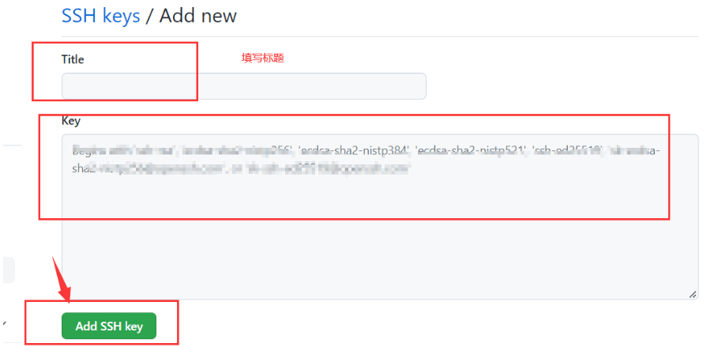
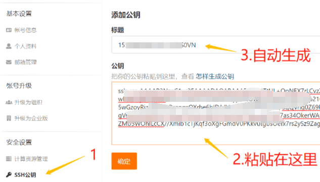

Git-公钥
首先，你的电脑上需要下载安装 Git 工具，链接https://git-scm.com/downloads
Git 本机 ssh 公钥类似于 Git 仓库的通行证。没有公钥上次时需要每次都输入账号和密码
1 | git config --global user.name "lxxxxdy" *#码云用户名* |
生成
如果没有则需要重新生成，命令为：
1 | ssh-keygen -t rsa -C \"邮箱地址" |
接着会确认存放公钥的地址，默认就是上面说的路径，直接 enter 键确认
接着会要求输入密码和确认密码，如果不想设置密码直接不输入内容 按 enter 键
直接回车到底即可，完成后输入以下指令即可查看，如果不是默认地址请自行更改下面的命令。
1 | cat ~/.ssh/id_rsa.pub |
此时，在你的本地就已经生成了公钥。一般在：C:\Users\Administrator.ssh 文件夹下 id_rsa.pub 文件
查看
1、第一步查看 git 的 ssh 公钥是否存在，win+S 键打开搜索框，输入”Git Bash”并打开
2、然后在 Git Bash 输入以下命名查看是否有密钥：
1 | cd ~/.ssh（回车） |
如果没有图中 id_rsa.pub 的文件则没有密钥，需要重新生成。命令为：
1 | ssh-keygen -t rsa -C \"邮箱地址" |
使用
Github
拷贝公钥，从浏览器进入 GitHub，然后，在右上角个人账号信息里面，点击 etting（设置），在设置里面，点击 SSH
and GPG keys，再点击 New SSH key。
将刚才复制的公钥，直接复制进去，标题随便起。
测试本地是否可以成功连接上 GitHub：
1 | ssh -T <git@github.com> |
Gitee
3.将生成的公钥文件 id_rsa.pub 打开，复制其中内容，到 Gitee 中
测试本地是否可以成功连接上 GitHub：
1 | ssh -T <git@gitee.com> |